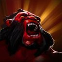
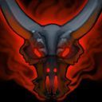
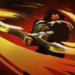
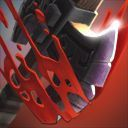
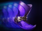

Dota 2 Builds
Axe
Ещё будучи рядовым бугаем в армии Красного тумана, Могул-хан положил глаз на генеральский титул. Битву за битвой он самыми кровавыми способами доказывал собственное превосходство. Облегчало подъём в чинах и то, что без тени сомнения он мог обезглавить старшего по званию. В семилетней кампании на Тысячеболотье Могул-хан отличился в кровопролитных бойнях, и звезда его славы засияла еще ярче, но число соратников неизменно сокращалось. В ночь безоговорочной победы он провозгласил себя генералом Красного тумана, присвоив себе заодно и титул верховного военачальника. Однако теперь в его отряде не значилось ни одного воина. Множество бойцов было повержено врагом, но и от его топора погибло достаточно. Стоит ли говорить, что большинство солдат теперь ни за что не переманить под его знамена? Но Могул-хана это совсем не смущает, ведь он знает: один в поле воин.
Способности/Abulities
Berserker's Call
 Герой бросает вызов ближайшим врагам, заставляя их атаковать его, а также получает бонус к броне на время действия способности.

Способность: ненаправленная
Действует на: врагов/себя
Радиус: 300 (Талант: 400)
Дополнительная броня: 25 (Талант: 33)
Длительность: 2/2,4/2,8/3,2
Могучий рёв Могул-хана вынуждает врагов вступить в заведомо проигранную схватку.Battle Hunger
 Приводит врага в бешенство, нанося ему урон, пока он кого-нибудь не убьёт или действие способности не закончится. Урон от способности увеличивается в зависимости от брони владельца способности. Скорость передвижения жертвы уменьшается, когда она не смотрит в сторону владельца способности.Способность: направленная на юнита
Действует на: врагов/себя (с Aghanim's Scepter)
Тип урона: физический
Дальность применения: 700/775/850/925
Базовый урон в секунду: 10/15/20/25
Множитель брони в урон в секунду: 100% (Талант: 200%)
Замедление передвижения: 11/19/27/35% (Талант: 23/31/39/47%)
Множитель скорости/брони за не-героя: 0,5
Угол поворота врага: 90°
Длительность: 12
Доп. скорость передвижения за эффект: 0 (Талант: 12%)
Обычные герои не могут сопротивляться ярости Могул-хана, и она калечит их, пока они не выместят ее на ком-нибудь.Counter Helix
 Герой с некоторой вероятностью отвечает на удары противников, нанося чистый урон всем врагам вокруг себя.Способность: Пассивная
Действует на: врагов
Тип урона: чистый
Урон: 60/100/140/180 (Талант: 90/130/170/210)
Радиус: 275
Шанс срабатывания: 17/18/19/20%
Могул-хан — сам себе войско.Culling Blade
 Герой находит слабую точку врага и наносит ему чистый урон. Если убить этой способностью вражеского героя, её перезарядка сбрасывается, броня её владельца навсегда увеличится, а он и его союзники поблизости временно получат дополнительную скорость передвижения.Способность: направленная на юнита
Действует на: врагов/союзников
Тип урона: чистый/мгновенное убийство
Дальность применения: 175
Радиус ускорения при убийстве: 900
Урон/Порог убийства: 250/350/450 (Талант: 400/500/600)
Бонус к броне за убийство: 1/1,5/2 (Талант: 2/2,5/3)
Дополнительная скорость передвижения при убийстве: 20/25/30%
Дополнительная скорость атаки при убийстве: 20/30/40
Длительность ускорения при убийстве: 6
Словно воплощение самой яростной битвы, Могул-хан жестоко расправляется с теми, кто осмелился дать ему бой.
Сборка/Builds
Начальный закуп:


Основные предметы:



YOUTUBE:GREYSHARK

YOUTUBE:GREYSHARK
ЭТА СБОРКА В STEAM